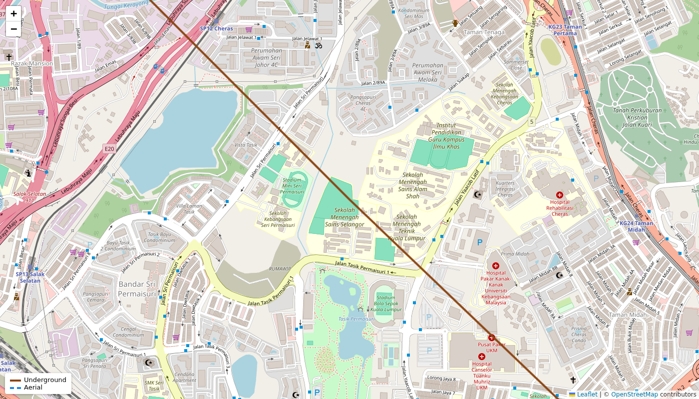
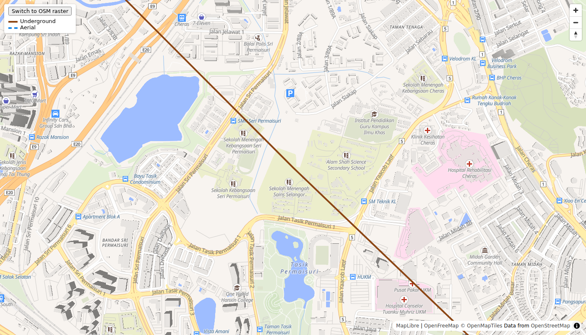

Showing our fibre network on a web map: 3 options compared
We need a web map that shows our fibre sites and the cable routes between them. This page compares three ways to build it, using the same mock data (5 sites and 4 routes around Kajang, Cheras, KL, Bangi and Putrajaya).
On every map, routes are coloured by type: Underground (brown, solid) and Aerial (blue, dashed). Click any site or route to see its name and details.
Printed copy: the live maps are left out. See the Screenshots section.
Live maps
These are live and interactive: drag, zoom and click. They need the local server (http://localhost:8000) and an internet connection for the background map.
Screenshots
Captured with Playwright (headless Chromium) at 1400 × 800 on 15 Oct 2026, so this record still works when the servers are off. Click an image for full size.
Whole network


Close-up on one route (Cheras to KL Central, same scale)




Comparison
| Google Maps | Leaflet + OSM tiles | MapLibre + OpenFreeMap | |
|---|---|---|---|
| Look | Most polished and familiar basemap | Flat raster tiles, looks dated, blurs between zoom levels | Smooth vector rendering, crisp at any zoom, rotation and tilt |
| Route styling | Data layer only: colour and width, no dashes | Full control, dashes included | Full control, data-driven styling, dashes via separate layers |
| Cost | Free monthly allowance, then pay per use | Free | Free |
| Key or account needed | API key plus billing account with a card | None | None |
| Integration effort | Script tag plus key, loadGeoJson | Easiest, about 20 lines | Slightly more: style, sources and layers |
| Scales to many routes | Fine for hundreds | Fine for hundreds to low thousands, slows after that | Best: WebGL handles tens of thousands |
| Risks | Vendor lock-in, key management, terms of use | OSM's public tile server forbids heavy use | OpenFreeMap has no SLA unless you self-host |
| Self-hosting/offline | No | Yes, with your own tiles | Yes, with your own tiles and style |
| PostGIS path | GeoJSON | GeoJSON | GeoJSON now, vector tiles later (Martin or pg_tileserv) |
Integration
The code that loads the route data and draws the routes, copied from each page. All three read the same routes.geojson file exported from our PostGIS database.
map.data.setStyle(f => {
// ... site marker style skipped ...
return { strokeColor: isUnderground(desc) ? '#8B4513' : '#1E88E5', strokeWeight: 4 };
});
map.data.loadGeoJson('routes.geojson', null, done);
Promise.all(['routes.geojson', 'sites.geojson'].map(f => fetch(f).then(r => r.json()))).then(([routes, sites]) => {
const r = L.geoJSON(routes, {
style: f => isUnderground(f.properties.description)
? { color: '#8B4513', weight: 4 }
: { color: '#1E88E5', weight: 4, dashArray: '8 6' },
map.addSource('routes', { type: 'geojson', data: data.routes });
map.addLayer({ id: 'routes-underground', type: 'line', source: 'routes', filter: UNDERGROUND,
layout: { 'line-cap': 'round' }, paint: { 'line-color': '#8B4513', 'line-width': 4 } });
map.addLayer({ id: 'routes-aerial', type: 'line', source: 'routes', filter: ['!', UNDERGROUND],
paint: { 'line-color': '#1E88E5', 'line-width': 4, 'line-dasharray': [2, 1.5] } });
Recommendation for this project
Use MapLibre with the OpenFreeMap basemap. It costs nothing, needs no key or card, and gave the sharpest result in our test. It also has the most room to grow: it can show tens of thousands of routes, and later it can read map tiles straight from our PostGIS database (with Martin or pg_tileserv) instead of one large file. The main risk is that OpenFreeMap is a free service with no uptime guarantee. Before real users depend on it, we should host the basemap ourselves or move to a paid tile provider; neither change needs a rewrite. Leaflet is a fine fallback for a quick internal prototype, but its look and its public tile server limits make it a weaker long-term choice. Google Maps was not tested, because it needs a billing account with a card. It is only worth revisiting if a familiar Google look matters more than cost and vendor lock-in.